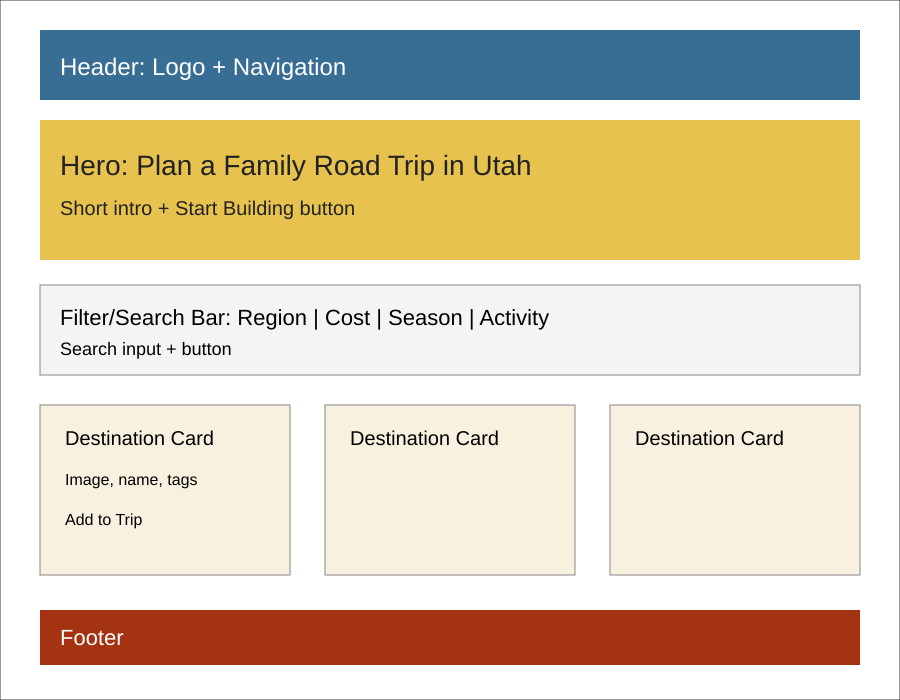
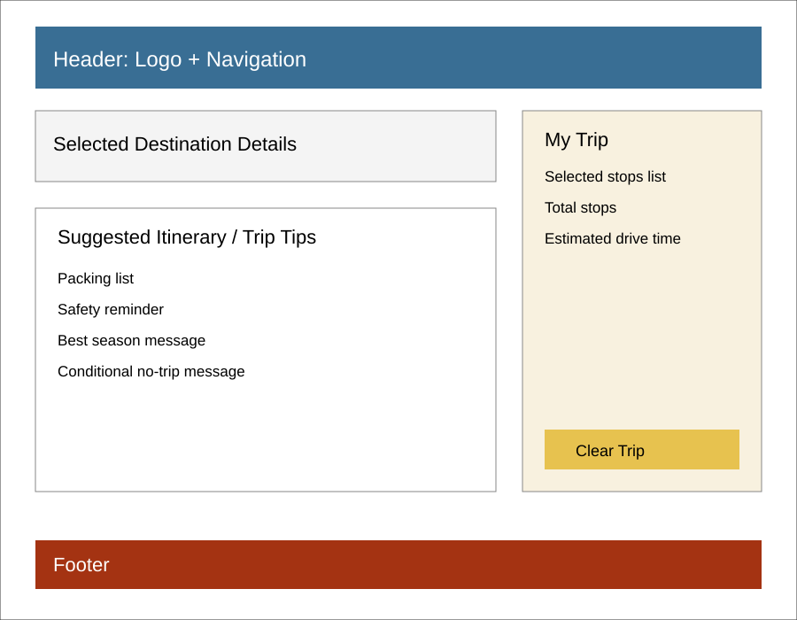

Overview
Purpose
The Utah Road Trip Builder helps families plan simple day trips by choosing Utah destinations based on season, distance, cost, and activity type. Users can browse suggested stops, filter destinations, and build a small custom itinerary for a family outing.
Audience
Utah families, parents, students, and visitors who want easy, family-friendly road trip ideas without spending a lot of time planning.
Dynamic elements
The site will use JavaScript to create destination cards from an array of destination objects. Users will be able to search and filter destinations by region, cost, season, and activity type. Each destination card will include an "Add to Trip" button that updates a selected trip itinerary section on the page. The itinerary will display the chosen stops, the total number of stops, and an estimated trip time. JavaScript will also show conditional messages, such as a message when no destinations match the selected filters or when no stops have been added to the trip yet.
Branding
Website Logo
Style Guide
Color Palette
Palette URL: https://coolors.co/396e94-e7c24f-a43312-381d2a-aabd8c| Primary | Secondary | Accent 1 | Accent 2 |
|---|---|---|---|
| [#396E94] | [#E7C24F] | [#A43312] | [#F8F1DF] |
Pseudocode for your project
Create an array named destinations. Each destination will be an object with properties for name, region, cost, season, activity type, drive time, image, description, and family-friendly tips.
When the page loads, call a function to display all destination cards. The function will loop through the destinations array with forEach and build the HTML for each card.
Listen for changes on the search input and filter controls. When the user searches or changes a filter, call a filter function that uses conditional logic and the filter array method to return matching destinations.
If matching destinations are found, display those destination cards. If no matching destinations are found, display a helpful message telling the user to adjust the search or filters.
When a user selects Add to Trip, add that destination object to a selectedTrip array. Then call an updateTrip function that displays the selected stops, total number of stops, and estimated drive time.
When the user selects Clear Trip, empty the selectedTrip array and update the itinerary section to show the default message again.
Wireframes
The project will include two main pages: a landing page with the main trip builder and a trip tips page with the selected trip summary and helpful road trip planning information.
Landing page
The landing page will include a header, navigation, hero section, search and filter controls, destination cards, and a footer. On mobile, the cards will stack in one column. On larger screens, the destination cards will display in a multi-column grid.

Trip Tips Page
The trip tips page will include a selected trip summary, trip planning tips, a short packing list, and conditional messages based on the selected trip. On mobile, the selected trip summary will stack below the main content.
